HLB Bayesian Spatial Modeling in Minas Gerais Brazil
Kaique Alves
26/08/2020
Packages
library(tidyverse)
library(nasapower)
library(cowplot)
library(ggthemes)
library(rgdal)
library(raster)
library(INLA)
library(spdep)
library(psych)
library(ggsn)
library(gstat)
library(maptools)
library(rnaturalearth)
library(rnaturalearthhires)
library(patchwork)
source("Bdiclcpomodel_stack.R")
source("coord_transform.R")Load data
hh_hlb = read.table("data/hlb_form_map2.txt") %>%
mutate(positive = case_when(presenca=="Present" ~ 1,
presenca=="Absent" ~ 0)) %>%
unite("latlon",lat,lon,remove = F) %>%
group_by(latlon) %>%
dplyr::filter(positive == max(positive)) %>%
ungroup() %>%
dplyr::select(-latlon)transform coordinates to utm
Download MG shape files
BRA <- ne_states(country = "Brazil", returnclass = "sf")
# subset spatial objects of only the states of interest
MG <- BRA[BRA$name_en == "Minas Gerais", ]MG
MG_shape = readOGR("./data/MG", "MG_Unidade_Federacao_2017_ago")## Warning in OGRSpatialRef(dsn, layer, morphFromESRI =
## morphFromESRI, dumpSRS = dumpSRS, : Discarded datum
## Sistema_de_Referencia_Geocentrico_para_las_AmericaS_2000 in CRS definition:
## +proj=longlat +ellps=GRS80 +towgs84=0,0,0,0,0,0,0 +no_defs## OGR data source with driver: ESRI Shapefile
## Source: "C:\Users\Epidemio-PC\Google Drive\Kaique-Alves\HLB_MG\Paper_hlb_maping_risk\01 - data_analysis\data\MG", layer: "MG_Unidade_Federacao_2017_ago"
## with 1 features
## It has 4 fieldsMG_shape = spTransform(MG_shape, CRSobj = "+proj=longlat")
# MG_shape = spTransform(MG_shape, CRS("+proj=utm +zone=23 +south ellps=WGS84"))
plot(MG_shape) # sudeste
# sudeste
MG_shape = readOGR("./data/mesoregiao", "mesoregiao")## Warning in OGRSpatialRef(dsn, layer, morphFromESRI = morphFromESRI, dumpSRS
## = dumpSRS, : Discarded datum South_American_Datum_1969 in CRS definition:
## +proj=longlat +ellps=aust_SA +no_defs## OGR data source with driver: ESRI Shapefile
## Source: "C:\Users\Epidemio-PC\Google Drive\Kaique-Alves\HLB_MG\Paper_hlb_maping_risk\01 - data_analysis\data\mesoregiao", layer: "mesoregiao"
## with 137 features
## It has 5 fieldsMG_shape = spTransform(MG_shape, CRSobj = "+proj=longlat")
# MG_shape = spTransform(MG_shape, CRS("+proj=utm +zone=23 +south ellps=WGS84"))
plot(MG_shape)
Maping manipulation
crds <- cbind(x=runif(100,-30,-10), y=runif(100,-60,-30))
# str(crds)
Pl <- Polygon(crds)
# str(Pl)
ID <- "400x400"
Pls <- Polygons(list(Pl), ID=ID)
# str(Pls)
SPls <- SpatialPolygons(list(Pls))
# str(SPls)
df <- data.frame(value=1, row.names=ID)
# str(df)
SPDF <- SpatialPolygonsDataFrame(SPls, df)Create a grid
cs <- c(.5, .5)
# cs <- c(25000,25000)
grdpts = makegrid(MG_shape, cellsize = cs)
spgrd <- SpatialPoints(grdpts, proj4string = CRS(proj4string(MG_shape)))## Warning in proj4string(MG_shape): CRS object has comment, which is lost in
## outputspgrdWithin <- SpatialPixels(spgrd[MG_shape,])
grid_df = as.data.frame(as(spgrdWithin,"SpatialPixelsDataFrame" )@coords)
plot(spgrdWithin)
Counting orchards by grid
Positive cases
#create dataframe with only positives
hh_hlb_positive = hh_hlb %>%
filter(positive == 1)
lon = hh_hlb_positive$lon
lat = hh_hlb_positive$lat
xy <- data.frame( lon, lat)
hlb_coords = SpatialPoints(xy,proj4string = CRS(proj4string(MG_shape)))## Warning in proj4string(MG_shape): CRS object has comment, which is lost in
## outputr = raster(spgrdWithin)
r[] <- 0
mg_raster = raster(MG_shape)
mg_raster[] <- 0
rr_positive = mask(r,mask = MG_shape)
tab <- table(cellFromXY(rr_positive, hlb_coords))
rr_positive[as.numeric(names(tab))] <- tab
plot(rr_positive)
Counts by orchard size
# Mini
hh_hlb_mini = hh_hlb %>%
filter(class=="Mini")
lon = hh_hlb_mini$lon
lat = hh_hlb_mini$lat
xy <- data.frame( lon, lat)
hlb_coords = SpatialPoints(xy,proj4string = CRS(proj4string(MG_shape)))## Warning in proj4string(MG_shape): CRS object has comment, which is lost in
## outputr = raster(spgrdWithin)
r[] <- 0
mg_raster = raster(MG_shape)
mg_raster[] <- 0
rr_mini = mask(r, mask = MG_shape) #<<<<<
tab <- table(cellFromXY(rr_mini, hlb_coords))#<<<<<
rr_mini[as.numeric(names(tab))] <- tab#<<<<<
# Small
hh_hlb_small = hh_hlb %>%
filter(class=="Small")
lon = hh_hlb_small$lon#<<<<<
lat = hh_hlb_small$lat#<<<<<
xy <- data.frame( lon, lat)
hlb_coords = SpatialPoints(xy,proj4string = CRS(proj4string(MG_shape)))## Warning in proj4string(MG_shape): CRS object has comment, which is lost in
## outputr = raster(spgrdWithin)
r[] <- 0
mg_raster = raster(MG_shape)
mg_raster[] <- 0
rr_small = mask(r, mask = MG_shape) #<<<<<
tab <- table(cellFromXY(rr_small, hlb_coords))#<<<<<
rr_small[as.numeric(names(tab))] <- tab#<<<<<
# medium
hh_hlb_medium = hh_hlb %>%
filter(class=="Medium")
lon = hh_hlb_medium$lon#<<<<<
lat = hh_hlb_medium$lat#<<<<<
xy <- data.frame( lon, lat)
hlb_coords = SpatialPoints(xy,proj4string = CRS(proj4string(MG_shape)))## Warning in proj4string(MG_shape): CRS object has comment, which is lost in
## outputr = raster(spgrdWithin)
r[] <- 0
mg_raster = raster(MG_shape)
mg_raster[] <- 0
rr_medium = mask(r, mask = MG_shape) #<<<<<
tab <- table(cellFromXY(rr_medium, hlb_coords))#<<<<<
rr_medium[as.numeric(names(tab))] <- tab#<<<<<
# Large
hh_hlb_large = hh_hlb %>%
filter(class=="Large")
lon = hh_hlb_large$lon#<<<<<
lat = hh_hlb_large$lat#<<<<<
xy <- data.frame( lon, lat)
hlb_coords = SpatialPoints(xy,proj4string = CRS(proj4string(MG_shape)))## Warning in proj4string(MG_shape): CRS object has comment, which is lost in
## outputr = raster(spgrdWithin)
r[] <- 0
mg_raster = raster(MG_shape)
mg_raster[] <- 0
rr_large = mask(r, mask = MG_shape) #<<<<<
tab <- table(cellFromXY(rr_large, hlb_coords))#<<<<<
rr_large[as.numeric(names(tab))] <- tab#<<<<<
plot(rr_large)
Count by species
# Orange
hh_hlb_orange = hh_hlb %>%
filter(especie=="Sweet orange")
lon = hh_hlb_orange$lon
lat = hh_hlb_orange$lat
xy <- data.frame( lon, lat)
hlb_coords = SpatialPoints(xy,proj4string = CRS(proj4string(MG_shape)))## Warning in proj4string(MG_shape): CRS object has comment, which is lost in
## outputr = raster(spgrdWithin)
r[] <- 0
mg_raster = raster(MG_shape)
mg_raster[] <- 0
rr_orange = mask(r, mask = MG_shape) #<<<<<
tab <- table(cellFromXY(rr_orange, hlb_coords))#<<<<<
rr_orange[as.numeric(names(tab))] <- tab#<<<<<
# Mandarin
hh_hlb_mandarin = hh_hlb %>%
filter(especie=="Mandarins")
lon = hh_hlb_mandarin$lon#<<<<<
lat = hh_hlb_mandarin$lat#<<<<<
xy <- data.frame( lon, lat)
hlb_coords = SpatialPoints(xy,proj4string = CRS(proj4string(MG_shape)))## Warning in proj4string(MG_shape): CRS object has comment, which is lost in
## outputr = raster(spgrdWithin)
r[] <- 0
mg_raster = raster(MG_shape)
mg_raster[] <- 0
rr_mandarin = mask(r, mask = MG_shape) #<<<<<
tab <- table(cellFromXY(rr_mandarin, hlb_coords))#<<<<<
rr_mandarin[as.numeric(names(tab))] <- tab#<<<<<
# Lemon
hh_hlb_lemon = hh_hlb %>%
filter(especie=="Lemon")
lon = hh_hlb_lemon$lon#<<<<<
lat = hh_hlb_lemon$lat#<<<<<
xy <- data.frame( lon, lat)
hlb_coords = SpatialPoints(xy,proj4string = CRS(proj4string(MG_shape)))## Warning in proj4string(MG_shape): CRS object has comment, which is lost in
## outputr = raster(spgrdWithin)
r[] <- 0
mg_raster = raster(MG_shape)
mg_raster[] <- 0
rr_lemon = mask(r, mask = MG_shape) #<<<<<
tab <- table(cellFromXY(rr_lemon, hlb_coords))#<<<<<
rr_lemon[as.numeric(names(tab))] <- tab#<<<<<
# acide lime
hh_hlb_acidlime = hh_hlb %>%
filter(especie=="Acid lime")
lon = hh_hlb_acidlime$lon#<<<<<
lat = hh_hlb_acidlime$lat#<<<<<
xy <- data.frame( lon, lat)
hlb_coords = SpatialPoints(xy,proj4string = CRS(proj4string(MG_shape)))## Warning in proj4string(MG_shape): CRS object has comment, which is lost in
## outputr = raster(spgrdWithin)
r[] <- 0
mg_raster = raster(MG_shape)
mg_raster[] <- 0
rr_acidlime = mask(r, mask = MG_shape) #<<<<<
tab <- table(cellFromXY(rr_acidlime, hlb_coords))#<<<<<
rr_acidlime[as.numeric(names(tab))] <- tab#<<<<<
plot(rr_mandarin)
Mean area
lon = hh_hlb$lon
lat = hh_hlb$lat
xy <- data.frame( lon, lat)
hlb_coords = SpatialPoints(xy,proj4string = CRS(proj4string(MG_shape)))## Warning in proj4string(MG_shape): CRS object has comment, which is lost in
## outputr = raster(spgrdWithin)
df_area = aggregate(hh_hlb[, 'area', drop=FALSE], hh_hlb[,3:2], mean)
coordinates(df_area) <- ~ lon + lat
# extent(r) <- extent(df_area)
rr_area = rasterize(df_area, r, df_area$area, fun = mean)
plot(rr_area)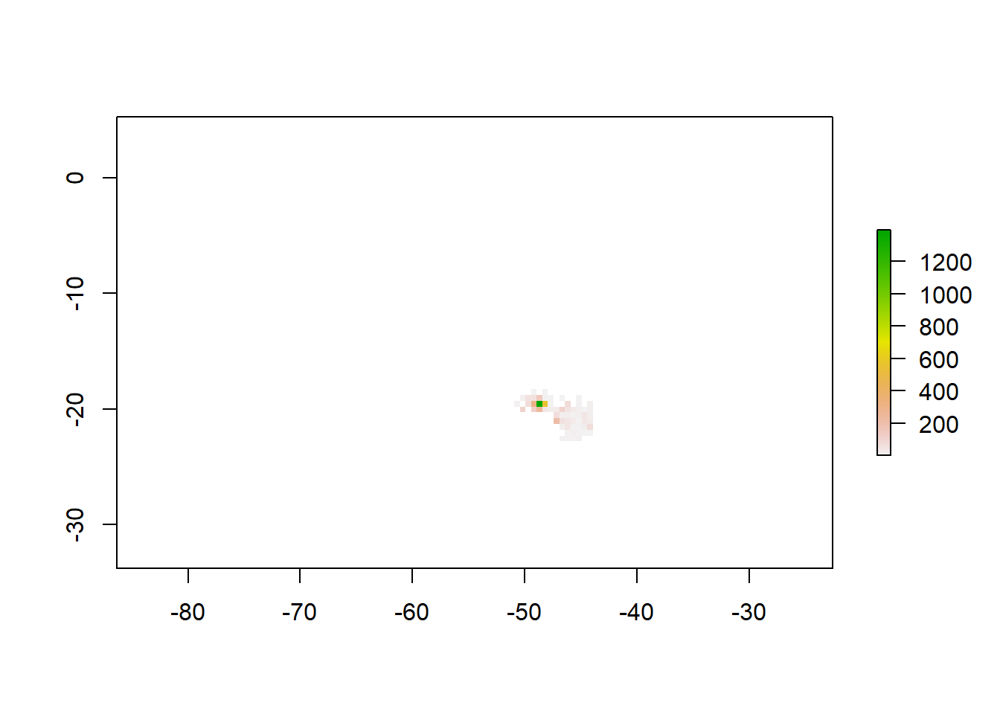
# rr_area
# rrCount All orchards (positives and negatives)
lon = hh_hlb$lon
lat = hh_hlb$lat
xy <- data.frame( lon, lat)
hlb_coords = SpatialPoints(xy,proj4string = CRS(proj4string(MG_shape)))## Warning in proj4string(MG_shape): CRS object has comment, which is lost in
## outputr = raster(spgrdWithin)
r[] <- 0
mg_raster = raster(MG_shape)
mg_raster[] <- 0
rr = mask(r, mask = MG_shape)
tab <- table(cellFromXY(rr, hlb_coords))
rr[as.numeric(names(tab))] <- tab
plot(rr)
rr2 = rr>0 & !is.na(rr)
grid_df = as.data.frame(as(rr2, "SpatialPixels")@coords) %>%
mutate(samp = rr2[]) %>%
filter(samp ==TRUE)Map: Disease grid
ggplot()+
geom_sf( data = BRA, fill = "white", color = "gray90")+
geom_sf(data = MG, fill = "gray99", color = "black") +
geom_tile(data =grid_df,aes(x,y),
fill ="gray90",
size = .2,
color = "gray75", alpha = 0.8)+
geom_point(data = hh_hlb %>% dplyr::select(-presenca),
aes(lon, lat),
size = 0.3, color = "gray80")+
geom_point(data = hh_hlb,
aes(lon, lat, color = presenca),
size = 0.3, alpha = 1)+
scale_color_manual(values =c("#3e9b39", 'red'))+
# scale_color_manual(values =c("black", 'orange'))+
coord_sf() +
guides(color = guide_legend(override.aes = list(size=2.5)))+
theme_minimal_grid()+
labs(x = "Longitude",
y = "Latitude",
color = "")+
north( location = "topleft", scale = 0.08, symbol = 10,
x.min=-51, x.max=-43.5, y.min=-23, y.max=-18)+
scalebar(location = "bottomleft", dist = 100,
dist_unit = "km", transform = TRUE,
x.min=-51, x.max=-44, y.min=-23, y.max=-18,
st.bottom = FALSE, height = 0.04,
st.dist = 0.05, st.size = 3)+
ylim(-23, -18)+
xlim(-51, -43.5)+
facet_wrap(~presenca)+
theme(panel.border = element_rect(color = "gray"),
axis.text = element_text(size =8))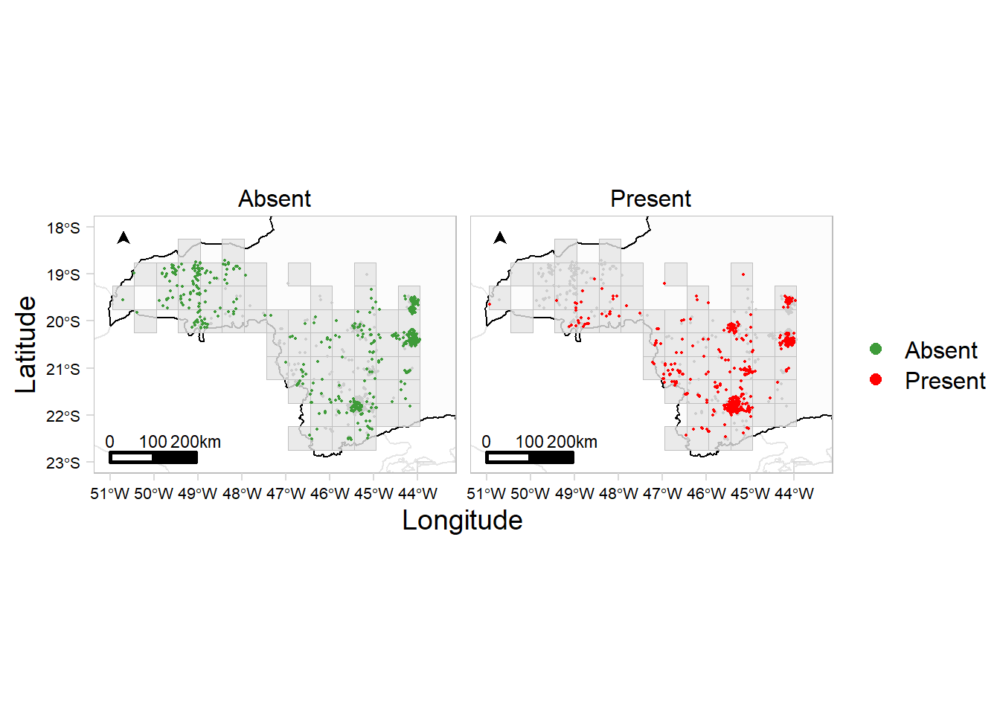
ggsave("figs/map_disease.png", dpi = 600, height = 4, width = 10)Tyding
grid_incidence = data.frame(coordinates(rr),
samples=rr[],
positives = rr_positive[],
area = rr_area[],
large = rr_large[],
medium = rr_medium[],
small = rr_small[],
mini=rr_mini[],
orange=rr_orange[],
mandarin = rr_mandarin[],
lemon=rr_lemon[],
acid_lime=rr_acidlime[]) %>%
mutate(samples = replace_na(samples , 0),
positives = replace_na(positives , 0),
area = replace_na(area , 0),
large = replace_na(large , 0),
medium = replace_na(medium , 0),
small = replace_na(small , 0),
mini=replace_na(mini , 0),
orange=replace_na(orange , 0),
mandarin = replace_na(mandarin , 0),
lemon=replace_na(lemon , 0),
acid_lime=replace_na(acid_lime , 0)) %>%
filter(samples>0)
min(grid_incidence$area)## [1] 0.6Create the neighborhood structure with a distance criterion of 30km
Transform coordinates to UTM
long = grid_incidence$x
lat = grid_incidence$y
xy <- data.frame(ID = 1:(length(lat)), long, lat)
coordinates(xy) <- c("long", "lat")
proj4string(xy) <- CRS("+init=epsg:4326")
res <- spTransform(xy, CRS("+proj=utm +zone=23 +south ellps=WGS84"))## Warning in showSRID(uprojargs, format = "PROJ", multiline = "NO", prefer_proj =
## prefer_proj): Discarded datum Unknown based on WGS84 ellipsoid in CRS definitioncoords_grid = as.data.frame(res)
coords2 = as.matrix(coords_grid[,2:3])
colnames(coords2) <- c("x1","x2")
# max(coords_grid$long)-min(coords_grid$long) Neighborhood structure
ID <- 1:dim(coords2)[1]
col.nb.0.all <- dnearneigh(coords2, 0, 100000, row.names=ID)
nb2INLA("./models/grid25.graph", col.nb.0.all)
grid_grafo25 <- inla.read.graph("./models/grid25.graph")
plot(grid_grafo25)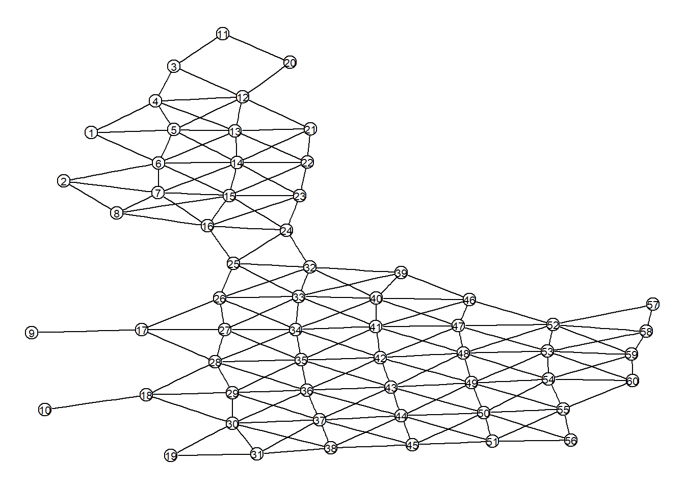
Moran’s test
Moran’s I test for spatial autocorrelation
prop <- grid_incidence$positives/grid_incidence$samples
listw<- nb2listw(col.nb.0.all, zero.policy = T)
moran.test(prop, listw,zero.policy=T)##
## Moran I test under randomisation
##
## data: prop
## weights: listw
##
## Moran I statistic standard deviate = 4.7501, p-value = 1.017e-06
## alternative hypothesis: greater
## sample estimates:
## Moran I statistic Expectation Variance
## 0.36858576 -0.01694915 0.00658757Download climatologic data
Nasa Power
box=data.frame()
for(i in 1:length(grid_incidence[,1])){
power = get_power(lonlat =c( grid_incidence[i,1], grid_incidence[i,2]),
pars = c("T2M","PRECTOT","WS10M"),
community = "AG",
temporal_average = "CLIMATOLOGY")
box = box %>%
bind_rows(power)
}
write.table(box,"data/power_data.txt")Correcting coordinates values
power_load= read.table("data/power_data.txt") %>%
mutate(LON = LON-0.00001,
LAT = LAT-0.00001)
head(power_load)| LON | LAT | PARAMETER | JAN | FEB | MAR | APR | MAY | JUN | JUL | AUG | SEP | OCT | NOV | DEC | ANN |
|---|---|---|---|---|---|---|---|---|---|---|---|---|---|---|---|
| -49.2 | -18.5 | T2M | 24.25 | 24.26 | 24.01 | 23.29 | 21.30 | 20.32 | 20.93 | 23.31 | 25.97 | 26.72 | 25.54 | 24.59 | 23.71 |
| -49.2 | -18.5 | PRECTOT | 7.87 | 6.59 | 6.14 | 2.48 | 1.02 | 0.45 | 0.18 | 0.51 | 1.66 | 3.24 | 5.71 | 7.76 | 3.63 |
| -49.2 | -18.5 | WS10M | 2.72 | 2.48 | 2.52 | 2.76 | 2.91 | 3.23 | 3.72 | 4.05 | 3.93 | 3.28 | 2.89 | 2.82 | 3.11 |
| -48.2 | -18.5 | T2M | 23.66 | 23.68 | 23.38 | 22.53 | 20.52 | 19.22 | 19.62 | 21.72 | 24.49 | 25.43 | 24.47 | 23.87 | 22.72 |
| -48.2 | -18.5 | PRECTOT | 8.23 | 6.71 | 6.35 | 2.38 | 1.03 | 0.41 | 0.21 | 0.53 | 1.60 | 3.40 | 6.01 | 8.51 | 3.78 |
| -48.2 | -18.5 | WS10M | 3.00 | 2.78 | 2.83 | 3.03 | 3.09 | 3.38 | 3.83 | 4.13 | 4.04 | 3.49 | 3.15 | 3.05 | 3.32 |
Full dataset
dry_months = c("MAY","JUN","JUL","AUG")
power_tidy = power_load %>%
unite("latlong",LON,LAT) %>%
gather(3:14, key = "month", value = "measurement") %>%
mutate(season = case_when(month %in% dry_months ~"dry",
!month %in% dry_months ~"rainy")) %>%
group_by(latlong, PARAMETER, ANN, season) %>%
summarise(mean = mean(measurement)) %>%
spread(season, mean) %>%
ungroup()## `summarise()` regrouping output by 'latlong', 'PARAMETER', 'ANN' (override with `.groups` argument)data = bind_cols(
power_tidy %>%
filter(PARAMETER == "PRECTOT") %>%
mutate(prec_ann= ANN, prec_dry= dry, prec_rainy= rainy) %>%
dplyr::select(-ANN, -dry, -rainy,-PARAMETER),
power_tidy%>%
filter(PARAMETER == "T2M") %>%
mutate(temp_ann= ANN, temp_dry= dry, temp_rainy= rainy) %>%
dplyr::select(-ANN, -dry, -rainy,-PARAMETER,-latlong),
power_tidy%>%
filter(PARAMETER == "WS10M") %>%
mutate(wind_ann= ANN, wind_dry= dry, wind_rainy= rainy) %>%
dplyr::select(-ANN, -dry, -rainy,-PARAMETER,-latlong)
) %>%
separate(latlong, into = c("x", "y"), sep = "_", convert = TRUE) %>%
arrange(x,y) %>%
bind_cols(
grid_incidence %>%
arrange(x,y) %>%
mutate(large_area = medium+large,
small_area = mini+small,
mandarin = log(mandarin+1),
orange = log(orange+1)
) %>%
dplyr::select(-x,-y)) %>%
mutate(area = log(area)) %>%
# Add a column for random effect
mutate(S = 1:length(grid_incidence[,1]))
head(data)| x | y | prec_ann | prec_dry | prec_rainy | temp_ann | temp_dry | temp_rainy | wind_ann | wind_dry | wind_rainy | samples | positives | area | large | medium | small | mini | orange | mandarin | lemon | acid_lime | large_area | small_area | S |
|---|---|---|---|---|---|---|---|---|---|---|---|---|---|---|---|---|---|---|---|---|---|---|---|---|
| -50.7 | -19.5 | 3.77 | 0.7175 | 5.30125 | 24.63 | 22.1425 | 25.87375 | 2.89 | 3.1275 | 2.77875 | 2 | 1 | 1.996060 | 0 | 0 | 0 | 2 | 0.6931472 | 0.6931472 | 0 | 0 | 0 | 2 | 1 |
| -50.2 | -20.0 | 3.68 | 0.7875 | 5.12375 | 24.40 | 21.6250 | 25.79500 | 3.14 | 3.3700 | 3.02250 | 2 | 0 | 4.653484 | 0 | 2 | 0 | 0 | 0.0000000 | 0.0000000 | 0 | 2 | 2 | 0 | 2 |
| -50.2 | -19.0 | 3.71 | 0.6050 | 5.25750 | 24.61 | 22.3925 | 25.71875 | 2.94 | 3.2225 | 2.79250 | 1 | 0 | 2.302585 | 0 | 0 | 0 | 1 | 0.6931472 | 0.0000000 | 0 | 0 | 0 | 1 | 3 |
| -49.7 | -19.5 | 3.71 | 0.6525 | 5.23000 | 23.93 | 21.3500 | 25.22750 | 3.12 | 3.4175 | 2.97750 | 12 | 0 | 4.191375 | 0 | 4 | 7 | 1 | 2.4849066 | 0.6931472 | 0 | 0 | 4 | 8 | 4 |
| -49.7 | -19.0 | 3.65 | 0.5850 | 5.18375 | 24.33 | 22.0775 | 25.44875 | 3.09 | 3.4450 | 2.90875 | 26 | 0 | 3.875807 | 0 | 10 | 15 | 1 | 3.2580965 | 0.0000000 | 1 | 0 | 10 | 16 | 5 |
| -49.2 | -20.0 | 3.82 | 0.7400 | 5.35500 | 23.45 | 20.6175 | 24.86000 | 3.14 | 3.3375 | 3.04375 | 22 | 5 | 4.760651 | 4 | 5 | 11 | 2 | 3.1354942 | 0.0000000 | 0 | 0 | 9 | 13 | 6 |
###Scaling
# data= dataa %>%
# mutate(prec_rainy = scale(prec_rainy),
# temp_dry = scale(temp_dry),
# wind_ann = scale(wind_ann),
# area = (area),
# mandarin = log(mandarin+1),
# orange = log(orange+1))Correlation
correl = cor(data[c(3:11,14,20:19)])
xy <- expand.grid(x=1:12,y=12:1)
a=rowSums(xy)/12
as.data.frame(correl) %>%
rownames_to_column(var = "var1") %>%
gather(2:13, key = "var", value = "value") %>%
mutate(value = round(value,2)) %>%
arrange(var1, var) %>%
mutate(aa= round(a,3)) %>%
# filter(aa<=0.52) %>%
mutate(value = case_when(aa <= 1 ~ value,
aa > 1 ~ NA_real_)) %>%
ggplot(aes(var1,var,fill = value, label = value)) +
geom_tile()+
geom_text()+
coord_equal()+
scale_fill_gradient2(low = "red", mid = "white", high = "steelblue",
limits= c(-1,1),na.value="white")+
theme(axis.text.x = element_text(angle = 90, hjust = 1))+
labs(x="",
y = "",
fill= "r")## Warning: Removed 78 rows containing missing values (geom_text).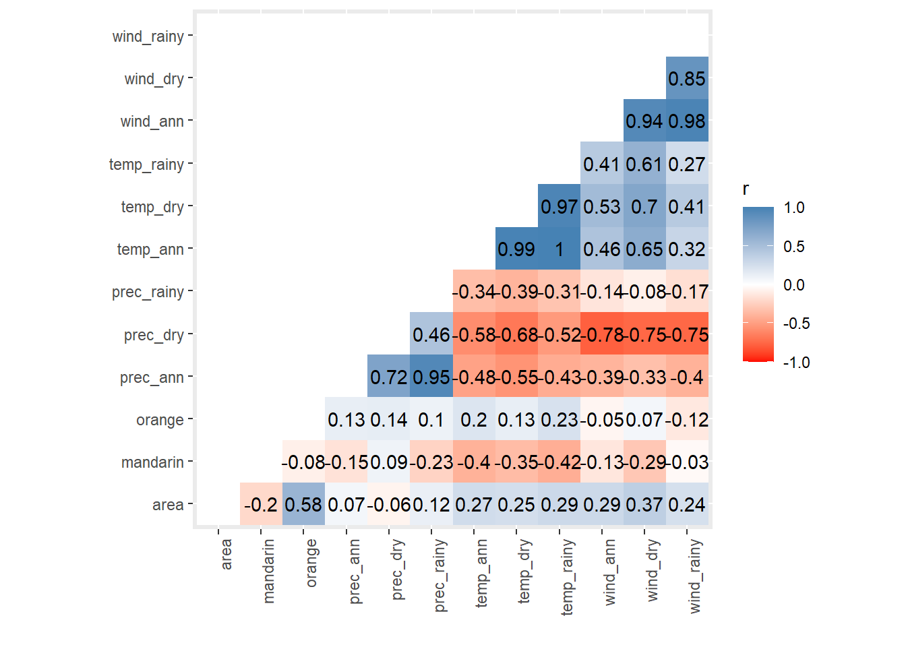
# ggsave("figs/correl.png",dpi = 600, height = 7, width = 8)Bayesian Modeling
Model Selection using variables
Hyperparameters
Simpson et al. (2017) prior distributions for hyperparameters
u <- 0.2/0.31
alpha <- 0.01
phi.u <- 0.5
phi.alpha <- 2/3Predictor variables
#lembrar de colocar a especie e tamanho da lavoura
# colnames(data)
variables <- c(
# "large","medium","small","mini",
"area",
"orange", #<
"mandarin", #<
# "lemon","acid_lime",
# "small_area",
# "large_area",
# "prec_dry",
"prec_rainy",
# "temp_dry",
"temp_dry",
# "wind_dry",
# "wind_rainy",
"wind_ann",#<
"f(S, model = 'bym2', graph=grid_grafo25, scale.model = TRUE, constr = TRUE,
hyper=list(phi = list( prior = 'pc', param = c(phi.u, phi.alpha), initial = -3),
prec = list(prior = 'pc.prec', param = c(u, alpha), initial = 5)))"
)
# 2^6Response variable
resp<-data$positives
total<-data$samplesModeling
models_bin<-Bdiclcpomodel_stack(resp=resp, variables=variables,
Ntrials=total,
datos=data, n=20,
family="binomial",
control.predictor=list(compute=FALSE),
control.compute = list(
config=TRUE, dic=TRUE, cpo=TRUE, waic=TRUE),
verbose=F)
save(models_bin, file="./models/best_models_clim.RData")Ranking models by WAIC criteria
models_bin$`Modelos segun waic`[1:10,]| Modelos | Dic | Waic | LCPO | LCPO-failure |
|---|---|---|---|---|
| resp ~ 1 + prec_rainy + temp_dry + wind_ann + f(S, model = ‘bym2’, graph=grid_grafo25, scale.model = TRUE, constr = TRUE, |
hyper=list(phi = list( prior = 'pc', param = c(phi.u, phi.alpha), initial = -3),
prec = list(prior = 'pc.prec', param = c(u, alpha), initial = 5))) | 218.0704| 215.6784| 6.370220| 1.421035||resp ~ 1 + area + prec_rainy + temp_dry + wind_ann + f(S, model = ‘bym2’, graph=grid_grafo25, scale.model = TRUE, constr = TRUE,
hyper=list(phi = list( prior = ‘pc’, param = c(phi.u, phi.alpha), initial = -3), prec = list(prior = ‘pc.prec’, param = c(u, alpha), initial = 5))) | 218.1381| 215.7278| 6.480830| 1.729180| |resp ~ 1 + area + prec_rainy + wind_ann + f(S, model = ‘bym2’, graph=grid_grafo25, scale.model = TRUE, constr = TRUE,
hyper=list(phi = list( prior = ‘pc’, param = c(phi.u, phi.alpha), initial = -3), prec = list(prior = ‘pc.prec’, param = c(u, alpha), initial = 5))) | 219.9246| 215.9577| 6.443634| 1.592647| |resp ~ 1 + mandarin + temp_dry + wind_ann + f(S, model = ‘bym2’, graph=grid_grafo25, scale.model = TRUE, constr = TRUE,
hyper=list(phi = list( prior = ‘pc’, param = c(phi.u, phi.alpha), initial = -3), prec = list(prior = ‘pc.prec’, param = c(u, alpha), initial = 5))) | 217.2635| 215.9607| 6.163038| 1.370551| |resp ~ 1 + prec_rainy + wind_ann + f(S, model = ‘bym2’, graph=grid_grafo25, scale.model = TRUE, constr = TRUE,
hyper=list(phi = list( prior = ‘pc’, param = c(phi.u, phi.alpha), initial = -3), prec = list(prior = ‘pc.prec’, param = c(u, alpha), initial = 5))) | 219.8732| 216.0876| 6.379551| 1.405377| |resp ~ 1 + area + prec_rainy + f(S, model = ‘bym2’, graph=grid_grafo25, scale.model = TRUE, constr = TRUE,
hyper=list(phi = list( prior = ‘pc’, param = c(phi.u, phi.alpha), initial = -3), prec = list(prior = ‘pc.prec’, param = c(u, alpha), initial = 5))) | 219.8459| 216.1051| 6.414918| 1.523559| |resp ~ 1 + area + temp_dry + wind_ann + f(S, model = ‘bym2’, graph=grid_grafo25, scale.model = TRUE, constr = TRUE,
hyper=list(phi = list( prior = ‘pc’, param = c(phi.u, phi.alpha), initial = -3), prec = list(prior = ‘pc.prec’, param = c(u, alpha), initial = 5))) | 218.1935| 216.1613| 6.471378| 1.661136| |resp ~ 1 + temp_dry + wind_ann + f(S, model = ‘bym2’, graph=grid_grafo25, scale.model = TRUE, constr = TRUE,
hyper=list(phi = list( prior = ‘pc’, param = c(phi.u, phi.alpha), initial = -3), prec = list(prior = ‘pc.prec’, param = c(u, alpha), initial = 5))) | 218.3476| 216.2943| 6.360485| 1.430477| |resp ~ 1 + area + orange + prec_rainy + f(S, model = ‘bym2’, graph=grid_grafo25, scale.model = TRUE, constr = TRUE,
hyper=list(phi = list( prior = ‘pc’, param = c(phi.u, phi.alpha), initial = -3), prec = list(prior = ‘pc.prec’, param = c(u, alpha), initial = 5))) | 220.2124| 216.3472| 6.482549| 1.571455| |resp ~ 1 + area + orange + prec_rainy + wind_ann + f(S, model = ‘bym2’, graph=grid_grafo25, scale.model = TRUE, constr = TRUE,
hyper=list(phi = list( prior = ‘pc’, param = c(phi.u, phi.alpha), initial = -3), prec = list(prior = ‘pc.prec’, param = c(u, alpha), initial = 5))) | 220.3831| 216.4015| 6.502562| 1.650907|
Best model
# models_bin$`Modelos segun waic`[1,1]
f1 <- positives ~ 1 + prec_rainy + temp_dry + wind_ann + f(S, model = "bym2",
graph=grid_grafo25,
scale.model = TRUE,
constr = TRUE,
hyper=list(
phi = list(
prior = "pc",
param = c(phi.u, phi.alpha),
initial = -3),
prec = list(
prior = "pc.prec",
param = c(u, alpha),
initial = 5)))
mod<-inla(f1, family="binomial", data=data, Ntrials = samples,
control.compute=list(dic=TRUE,cpo=TRUE, waic=TRUE), verbose = FALSE)
# plot(data$wind_dry,data$wind_rainy)
# bym2mod <- inla.rerun(mod)
saveRDS(mod, "./models/best_model.RDS")Summary statistics
# mod$logfile
summary(mod)##
## Call:
## c("inla(formula = f1, family = \"binomial\", data = data, Ntrials =
## samples, ", " verbose = FALSE, control.compute = list(dic = TRUE, cpo =
## TRUE, ", " waic = TRUE))")
## Time used:
## Pre = 10.1, Running = 2.12, Post = 0.118, Total = 12.3
## Fixed effects:
## mean sd 0.025quant 0.5quant 0.975quant mode kld
## (Intercept) 1.244 8.309 -15.203 1.245 17.690 1.270 0
## prec_rainy 1.264 1.198 -1.109 1.264 3.625 1.263 0
## temp_dry -0.670 0.211 -1.096 -0.666 -0.262 -0.660 0
## wind_ann 1.330 0.673 0.041 1.317 2.691 1.293 0
##
## Random effects:
## Name Model
## S BYM2 model
##
## Model hyperparameters:
## mean sd 0.025quant 0.5quant 0.975quant mode
## Precision for S 0.678 0.194 0.375 0.652 1.13 0.603
## Phi for S 0.141 0.146 0.005 0.090 0.55 0.010
##
## Expected number of effective parameters(stdev): 37.74(2.48)
## Number of equivalent replicates : 1.59
##
## Deviance Information Criterion (DIC) ...............: 218.07
## Deviance Information Criterion (DIC, saturated) ....: 107.39
## Effective number of parameters .....................: 36.72
##
## Watanabe-Akaike information criterion (WAIC) ...: 215.68
## Effective number of parameters .................: 25.90
##
## Marginal log-Likelihood: -117.40
## CPO and PIT are computed
##
## Posterior marginals for the linear predictor and
## the fitted values are computedinla.hpdmarginal(0.95,mod$marginals.fixed$`(Intercept)`)## low high
## level:0.95 -15.24114 17.61883inla.hpdmarginal(0.95,mod$marginals.fixed$prec_rainy)## low high
## level:0.95 -1.102464 3.625222inla.hpdmarginal(0.95,mod$marginals.fixed$temp_dry)## low high
## level:0.95 -1.090433 -0.257433inla.hpdmarginal(0.95,mod$marginals.fixed$wind_ann)## low high
## level:0.95 0.01627798 2.661063inla.hpdmarginal(0.95,mod$marginals.hyperpar$`Precision for S`)## low high
## level:0.95 0.3393248 1.064587inla.hpdmarginal(0.95,mod$marginals.hyperpar$`Phi for S`)## low high
## level:0.95 8.470926e-06 0.4519231bind_rows(#as.data.frame(mod$marginals.fixed$area) %>%
#mutate(var = "Orachard Area"),
as.data.frame(mod$marginals.fixed$prec_rainy) %>%
mutate(var = "Preciptation rainy"),
as.data.frame(mod$marginals.fixed$temp_dry) %>%
mutate(var = "Temp. dry season"),
as.data.frame(mod$marginals.fixed$wind_ann) %>%
mutate(var = "Annual wind speed "),
as.data.frame(mod$marginals.hyperpar$`Precision for S`) %>%
mutate(var = "Precision for S"),
as.data.frame(mod$marginals.hyperpar$`Phi for S`) %>%
mutate(var = "Phi for S")
) %>%
ggplot(aes(x, y, fill = var))+
geom_area(alpha = 0.5)+
geom_vline(xintercept = 0)+
facet_wrap(~var, scales = "free")+
scale_fill_calc()+
theme_minimal_grid(font_size = 12)+
theme(panel.grid = element_line(color = NA),
panel.border = element_rect(color ="gray"),
legend.position = "none")+
labs(y = "Density",
x = "Parameter")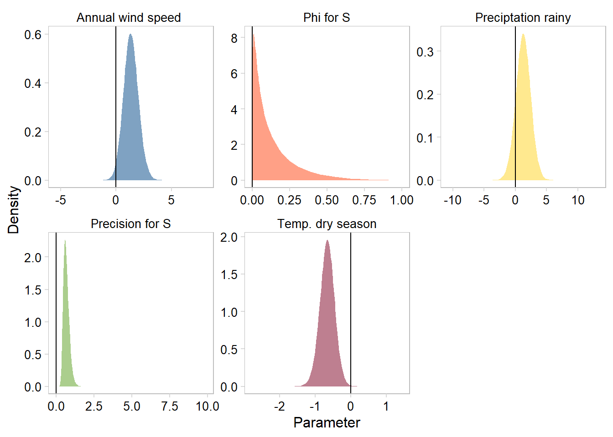
Posterior distributions
Spatial effect.
Mean
summary(mod$summary.random$S$mean)## Min. 1st Qu. Median Mean 3rd Qu. Max.
## -2.687424 -0.308621 -0.010554 0.008036 0.294281 2.060264summary(mod$summary.random$S$sd)## Min. 1st Qu. Median Mean 3rd Qu. Max.
## 0.3642 0.7189 0.8250 0.8720 0.9846 1.6845rr2 = rr>0
### --- Mean of the structured effect --- ###
rr2[as.numeric(names(tab))] <- mod$summary.random$S$mean[1:nrow(data)]
df = as(rr2, "SpatialPixelsDataFrame")
test_df <- as.data.frame(df)
colnames(test_df) <- c("value", "x", "y")
g_spt_v = ggplot(test_df %>%
filter(value!=0)) +
geom_sf( data = BRA, fill = "white", color = "gray60")+
geom_sf(data = MG, fill = "white", color = "black") +
geom_tile(aes(x=x, y=y, fill=value), alpha=1)+
scale_fill_viridis_c(option = "E")+
coord_sf() +
theme_minimal_grid(font_size = 8)+
labs(x = "Longitude",
y = "Latitude",
fill = "")+
north( location = "topleft", scale = 0.08, symbol = 10,
x.min=-51.5, x.max=-43.5, y.min=-23, y.max=-18)+
scalebar(location = "bottomleft", dist = 100,
dist_unit = "km", transform = TRUE,
x.min=-51, x.max=-44, y.min=-23, y.max=-18,
st.bottom = FALSE, height = 0.04,
st.dist = 0.05, st.size = 3)+
ylim(-23, -18)+
xlim(-51.5, -43.5)+
theme(panel.border = element_rect(color = "gray")) Standard deviation
rr2 = rr>0
### --- Mean of the structured effect --- ###
rr2[as.numeric(names(tab))] <- mod$summary.random$S$sd[1:nrow(data)]
df = as(rr2, "SpatialPixelsDataFrame")
test_df <- as.data.frame(df)
colnames(test_df) <- c("value", "x", "y")
g_spt_v_sd = ggplot(test_df %>%
filter(value!=0)) +
geom_sf( data = BRA, fill = "white", color = "gray60")+
geom_sf(data = MG, fill = "white", color = "black") +
geom_tile(aes(x=x, y=y, fill=value), alpha=0.95)+
scale_fill_gradient(low = "white", high = "#37bf87")+
coord_sf() +
theme_minimal_grid(font_size = 8)+
labs(x = "Longitude",
y = "Latitude",
fill = "")+
north( location = "topleft", scale = 0.08, symbol = 10,
x.min=-51.5, x.max=-43.5, y.min=-23, y.max=-18)+
scalebar(location = "bottomleft", dist = 100,
dist_unit = "km", transform = TRUE,
x.min=-51, x.max=-44, y.min=-23, y.max=-18,
st.bottom = FALSE, height = 0.04,
st.dist = 0.05, st.size = 3)+
ylim(-23, -18)+
xlim(-51.5, -43.5)+
theme(panel.border = element_rect(color = "gray")) RISK
Mean propability
summary( mod$summary.fitted.values$mean)## Min. 1st Qu. Median Mean 3rd Qu. Max.
## 0.03215 0.25035 0.46638 0.44769 0.63741 0.86535summary( mod$summary.fitted.values$sd)## Min. 1st Qu. Median Mean 3rd Qu. Max.
## 0.01899 0.08728 0.12579 0.12148 0.16268 0.22013rr2[as.numeric(names(tab))] <- mod$summary.fitted.values$mean
# plot(rr2)
df = as(rr2, "SpatialPixelsDataFrame")
test_df <- as.data.frame(df)
colnames(test_df) <- c("value", "x", "y")
g1_v = ggplot(test_df %>%
filter(value>0))+
geom_sf( data = BRA, fill = "white", color = "gray60")+
geom_sf(data = MG, fill = "white", color = "black") +
geom_tile(aes(x=x, y=y, fill=value), alpha=0.95)+
# geom_text(aes(x=x, y=y, label=round(value,3)), alpha=0.95)+
# geom_point(data = hh_hlb,
# aes(lon, lat, color = presenca),
# size = 0.4)+
# scale_color_manual(values =c("black","red"))+
# scale_fill_distiller(palette = "Spectral", direction = -1)+
scale_fill_distiller(palette = "YlOrRd", direction = 1)+
coord_sf() +
theme_minimal_grid(font_size = 8)+
labs(x = "Longitude",
y = "Latitude",
fill = "")+
north( location = "topleft", scale = 0.08, symbol = 10,
x.min=-51.5, x.max=-43.5, y.min=-23, y.max=-18)+
scalebar(location = "bottomleft", dist = 100,
dist_unit = "km", transform = TRUE,
x.min=-51, x.max=-44, y.min=-23, y.max=-18,
st.bottom = FALSE, height = 0.04,
st.dist = 0.05, st.size = 3)+
ylim(-23, -18)+
xlim(-51.5, -43.5)+
theme(panel.border = element_rect(color = "gray"))
# ggsave("figs/map_posterior.png", dpi = 600, height = 5, width = 8)Standard deviation
rr2[as.numeric(names(tab))] <- mod$summary.fitted.values$sd
df = as(rr2, "SpatialPixelsDataFrame")
test_df <- as.data.frame(df)
colnames(test_df) <- c("value", "x", "y")
g1_v_sd = ggplot(test_df %>%
filter(value>0))+
geom_sf( data = BRA, fill = "white", color = "gray60")+
geom_sf(data = MG, fill = "gray99", color = "black") +
geom_tile(aes(x=x, y=y, fill=value), alpha=0.95)+
# scale_fill_viridis_c(option = "B") +
scale_color_manual(values ="black")+
scale_fill_gradient(low = "white", high = "steelblue")+
coord_sf() +
theme_minimal_grid(font_size = 8)+
labs(x = "Longitude",
y = "Latitude",
fill = "")+
north( location = "topleft", scale = 0.08, symbol = 10,
x.min=-51.5, x.max=-43.5, y.min=-23, y.max=-18)+
scalebar(location = "bottomleft", dist = 100,
dist_unit = "km", transform = TRUE,
x.min=-51, x.max=-44, y.min=-23, y.max=-18,
st.bottom = FALSE, height = 0.04,
st.dist = 0.05, st.size = 3)+
ylim(-23, -18)+
xlim(-51.5, -43.5)+
theme(panel.border = element_rect(color = "gray"))Combo
plot_grid(g_spt_v,
g_spt_v_sd,
g1_v,
g1_v_sd,
labels = "auto",
scale = 0.95)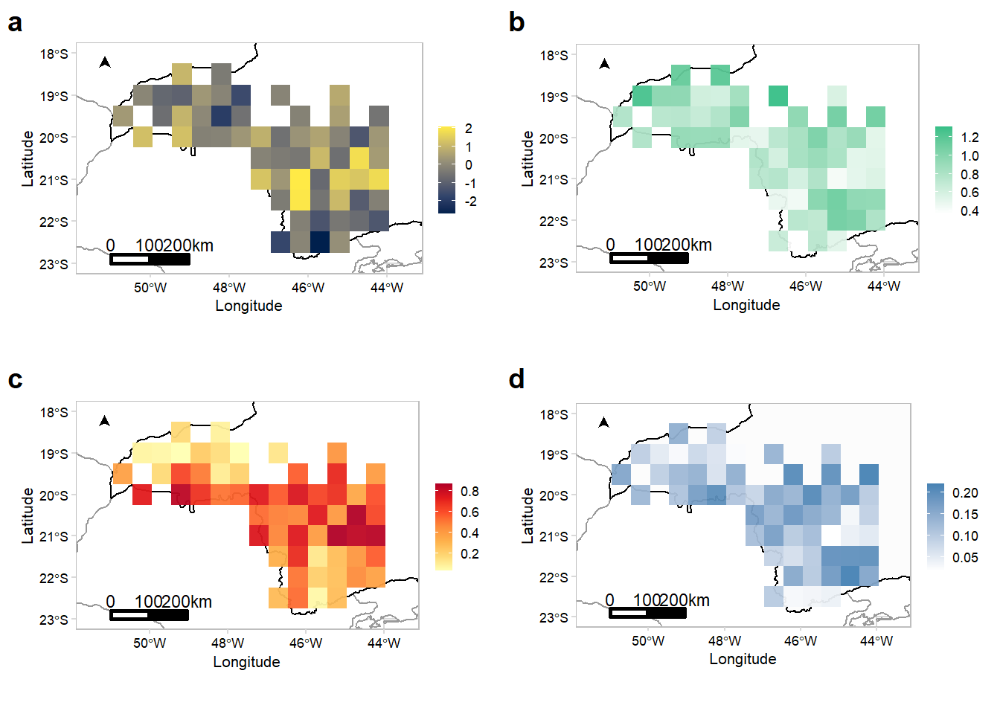
# ggsave("figs/combo_var.png", dpi = 300, height = 6, width = 10)Prediction
data %>%
mutate(prev = positives/samples) %>%
mutate(prob = mod$summary.fitted.values$mean,) %>%
summarise(r = cor(prev, prob),
r2 = cor(prev, prob)^2,
ccc = DescTools::CCC(prev, prob)$rho[,1])## Registered S3 method overwritten by 'DescTools':
## method from
## reorder.factor gdata| r | r2 | ccc |
|---|---|---|
| 0.8604914 | 0.7404454 | 0.8142569 |
prediction_var = data %>%
mutate(prev = positives/samples) %>%
mutate(prob = mod$summary.fitted.values$mean,
min = mod$summary.fitted.values$`0.025quant`,
max = mod$summary.fitted.values$`0.975quant`) %>%
ggplot(aes(prev,prob))+
geom_point(color ="gray", size =2.5)+
geom_errorbar(aes(ymin= min, ymax = max), width = 0, color ="gray", alpha = 0.5)+
geom_smooth(method = "lm", color = "steelblue", size =1.2) +
# theme_minimal_grid()+
coord_equal(xlim=c(0,1), ylim = c(0,1))+
theme(axis.line = element_line(color = "gray"),
panel.grid = element_blank(),
panel.background = element_blank())+
labs(subtitle = "Model with climate Variables",
y = "Predicted risk",
x = "Actual prevalence")
prediction_var## `geom_smooth()` using formula 'y ~ x'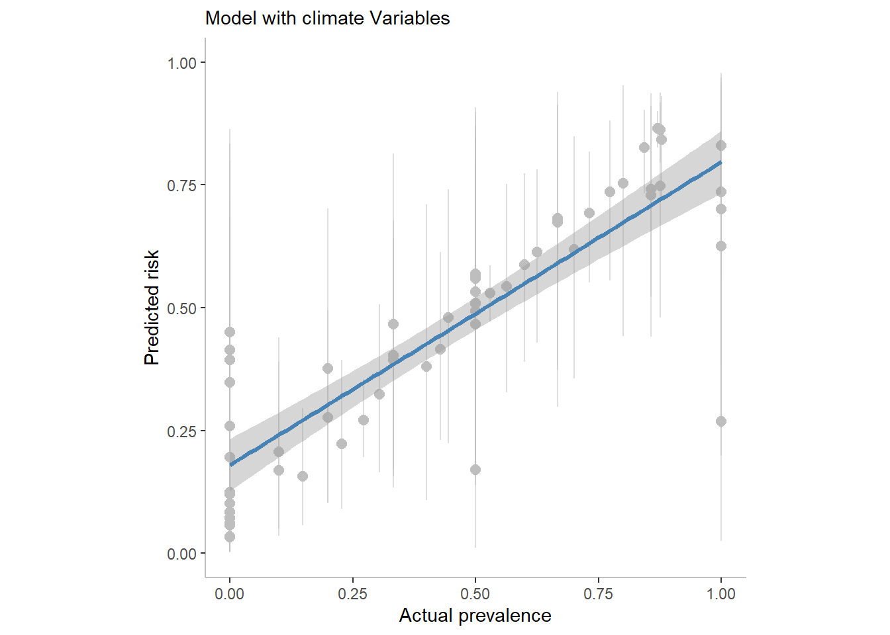
# ggsave("figs/pred_actual_var.png", dpi = 300, height = 3, width = 3)PCAs as predictors
Principal component analysis
pca_rotated <- psych::principal(data[c(3:11,14,20:19)], rotate="varimax",
nfactors=3,scores=TRUE, covar=FALSE)
pca_rotated$loadings##
## Loadings:
## RC3 RC1 RC2
## prec_ann -0.279 -0.884 0.238
## prec_dry -0.739 -0.566
## prec_rainy -0.872 0.297
## temp_ann 0.292 0.689 0.621
## temp_dry 0.383 0.716 0.537
## temp_rainy 0.237 0.666 0.660
## wind_ann 0.974 0.154 0.115
## wind_dry 0.883 0.219 0.364
## wind_rainy 0.974 0.109
## area 0.244 -0.147 0.653
## mandarin -0.630
## orange -0.164 0.649
##
## RC3 RC1 RC2
## SS loadings 3.685 3.403 2.646
## Proportion Var 0.307 0.284 0.220
## Cumulative Var 0.307 0.591 0.811as.data.frame(pca_rotated$loadings[]) %>%
rownames_to_column() %>%
arrange(rowname)| rowname | RC3 | RC1 | RC2 |
|---|---|---|---|
| area | 0.2440631 | -0.1473693 | 0.6530078 |
| mandarin | -0.0893842 | 0.0142300 | -0.6300902 |
| orange | -0.1639139 | -0.0703876 | 0.6492202 |
| prec_ann | -0.2793651 | -0.8843716 | 0.2379070 |
| prec_dry | -0.7394147 | -0.5655202 | 0.0101582 |
| prec_rainy | -0.0193787 | -0.8719963 | 0.2974463 |
| temp_ann | 0.2915728 | 0.6886810 | 0.6205215 |
| temp_dry | 0.3831891 | 0.7162316 | 0.5365203 |
| temp_rainy | 0.2366001 | 0.6657921 | 0.6604231 |
| wind_ann | 0.9744768 | 0.1536218 | 0.1152047 |
| wind_dry | 0.8825457 | 0.2190136 | 0.3637148 |
| wind_rainy | 0.9743377 | 0.1090170 | -0.0353112 |
# plot(pca_rotated)
pca_rotated$rot.mat## [,1] [,2] [,3]
## [1,] 0.6234273 0.3609286 0.69359132
## [2,] -0.4424035 0.8942571 -0.06770053
## [3,] -0.6446840 -0.2646409 0.71718040biplot(pca_rotated)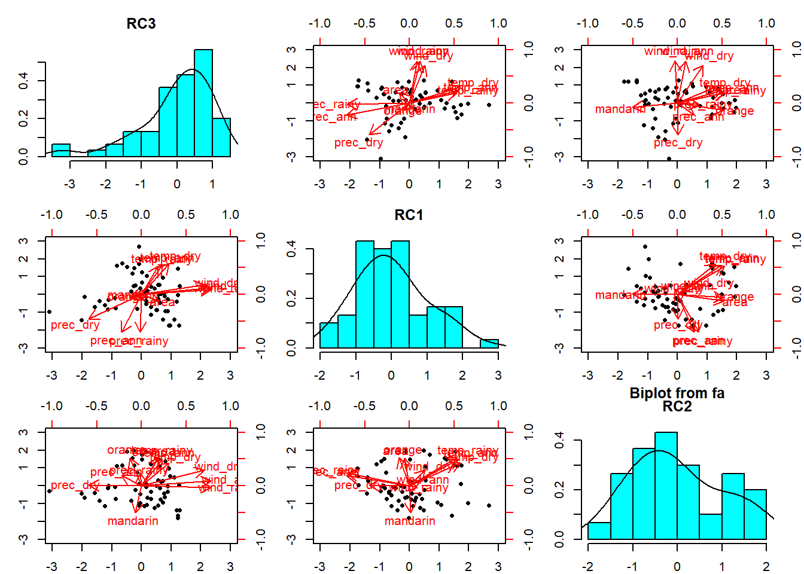
Put the five first components into the data frame
data_pca<-data[,c(1,2,12,13)]
data_pca$PC1<-pca_rotated$scores[,1]
data_pca$PC2<-pca_rotated$scores[,2]
data_pca$PC3<-pca_rotated$scores[,3]
# data_pca$PC4<-pca_rotated$scores[,4]
# data_pca$PC5<-pca_rotated$scores[,5]
write.table(data_pca, "./data/data_pca")
data_pca<-read.table("./data/data_pca")Add a column for the random effect
data_pca <- data.frame(data_pca, S=c(1:length(data_pca[,1])))Hyperparameters
Simpson et al. (2017) prior distributions for hyperparameters
u <- 0.2/0.31
alpha <- 0.01
phi.u <- 0.5
phi.alpha <- 2/3Predictor variables
variables <- c(
paste("PC", c(1, 2, 3), sep = ""),
"f(S, model = 'bym2', graph=grid_grafo25, scale.model = TRUE, constr = TRUE,
hyper=list(phi = list( prior = 'pc', param = c(phi.u, phi.alpha), initial = -3),
prec = list(prior = 'pc.prec', param = c(u, alpha), initial = 5)))"
)Response variable
resp<-data_pca$positives
total<-data_pca$samplesModeling
models_pca<-Bdiclcpomodel_stack(resp=resp, variables=variables,
Ntrials=total,
datos=data_pca, n=20,
family="binomial",
control.predictor=list(compute=FALSE),
control.compute = list(
config=TRUE, dic=TRUE, cpo=TRUE, waic=TRUE),
verbose=FALSE)
save(models_pca, file="./models/best_models_pca.RData")Ranking models by WAIC
models_pca$`Modelos segun waic`[1:10,]| Modelos | Dic | Waic | LCPO | LCPO-failure |
|---|---|---|---|---|
| resp ~ 1 + PC1 + PC2 + f(S, model = ‘bym2’, graph=grid_grafo25, scale.model = TRUE, constr = TRUE, |
hyper=list(phi = list( prior = 'pc', param = c(phi.u, phi.alpha), initial = -3),
prec = list(prior = 'pc.prec', param = c(u, alpha), initial = 5))) | 217.9115| 214.5037| 6.353682| 1.364609||resp ~ 1 + PC2 + f(S, model = ‘bym2’, graph=grid_grafo25, scale.model = TRUE, constr = TRUE,
hyper=list(phi = list( prior = ‘pc’, param = c(phi.u, phi.alpha), initial = -3), prec = list(prior = ‘pc.prec’, param = c(u, alpha), initial = 5))) | 217.7710| 214.5711| 6.310524| 1.245055| |resp ~ 1 + PC2 + PC3 + f(S, model = ‘bym2’, graph=grid_grafo25, scale.model = TRUE, constr = TRUE,
hyper=list(phi = list( prior = ‘pc’, param = c(phi.u, phi.alpha), initial = -3), prec = list(prior = ‘pc.prec’, param = c(u, alpha), initial = 5))) | 217.8569| 215.2869| 6.333512| 1.232243| |resp ~ 1 + PC1 + PC2 + PC3 + f(S, model = ‘bym2’, graph=grid_grafo25, scale.model = TRUE, constr = TRUE,
hyper=list(phi = list( prior = ‘pc’, param = c(phi.u, phi.alpha), initial = -3), prec = list(prior = ‘pc.prec’, param = c(u, alpha), initial = 5))) | 218.1408| 215.3735| 6.373215| 1.320727| |resp ~ 1 + PC1 + f(S, model = ‘bym2’, graph=grid_grafo25, scale.model = TRUE, constr = TRUE,
hyper=list(phi = list( prior = ‘pc’, param = c(phi.u, phi.alpha), initial = -3), prec = list(prior = ‘pc.prec’, param = c(u, alpha), initial = 5))) | 221.8184| 218.2135| 6.420100| 1.413026| |resp ~ 1 + f(S, model = ‘bym2’, graph=grid_grafo25, scale.model = TRUE, constr = TRUE,
hyper=list(phi = list( prior = ‘pc’, param = c(phi.u, phi.alpha), initial = -3), prec = list(prior = ‘pc.prec’, param = c(u, alpha), initial = 5))) | 221.7815| 218.4386| 6.375047| 1.315666| |resp ~ 1 + PC1 + PC3 + f(S, model = ‘bym2’, graph=grid_grafo25, scale.model = TRUE, constr = TRUE,
hyper=list(phi = list( prior = ‘pc’, param = c(phi.u, phi.alpha), initial = -3), prec = list(prior = ‘pc.prec’, param = c(u, alpha), initial = 5))) | 221.8390| 218.5158| 6.465170| 1.398807| |resp ~ 1 + PC3 + f(S, model = ‘bym2’, graph=grid_grafo25, scale.model = TRUE, constr = TRUE,
hyper=list(phi = list( prior = ‘pc’, param = c(phi.u, phi.alpha), initial = -3), prec = list(prior = ‘pc.prec’, param = c(u, alpha), initial = 5))) | 221.8794| 218.7026| 6.457620| 1.351509| |resp ~ 1 + PC1 + PC2 + PC3 | 417.5825| 433.0509| 3.634062| 0.000000| |resp ~ 1 + PC1 + PC3 | 488.7088| 511.9493| 4.309139| 0.000000|
Best model
f1 <- positives ~ 1 + PC1 + PC2 + f(S, model = "bym2",
graph=grid_grafo25,
scale.model = TRUE,
constr = TRUE,
hyper=list(
phi = list(
prior = "pc",
param = c(phi.u, phi.alpha),
initial = -3),
prec = list(
prior = "pc.prec",
param = c(u, alpha),
initial = 5)))
mod_pca<-inla(f1, family="binomial", data=data_pca, Ntrials = samples,
control.compute=list(dic=TRUE,cpo=TRUE, waic=TRUE), verbose = FALSE)mod_pca <- inla.rerun(mod_pca)
saveRDS(mod_pca, "./models/best_model_pca.RDS")Summary statistics
# mod$logfile
summary(mod_pca)##
## Call:
## c("inla(formula = f1, family = \"binomial\", data = data_pca, Ntrials =
## samples, ", " verbose = FALSE, control.compute = list(dic = TRUE, cpo =
## TRUE, ", " waic = TRUE))")
## Time used:
## Pre = 9.66, Running = 2.17, Post = 0.124, Total = 12
## Fixed effects:
## mean sd 0.025quant 0.5quant 0.975quant mode kld
## (Intercept) -0.396 0.207 -0.817 -0.391 0.001 -0.383 0
## PC1 0.036 0.212 -0.375 0.034 0.461 0.029 0
## PC2 -0.895 0.252 -1.403 -0.891 -0.412 -0.882 0
##
## Random effects:
## Name Model
## S BYM2 model
##
## Model hyperparameters:
## mean sd 0.025quant 0.5quant 0.975quant mode
## Precision for S 0.623 0.169 0.355 0.602 1.013 0.562
## Phi for S 0.172 0.148 0.012 0.128 0.566 0.033
##
## Expected number of effective parameters(stdev): 38.47(2.38)
## Number of equivalent replicates : 1.56
##
## Deviance Information Criterion (DIC) ...............: 217.91
## Deviance Information Criterion (DIC, saturated) ....: 57.60
## Effective number of parameters .....................: 37.39
##
## Watanabe-Akaike information criterion (WAIC) ...: 214.50
## Effective number of parameters .................: 25.61
##
## Marginal log-Likelihood: -116.83
## CPO and PIT are computed
##
## Posterior marginals for the linear predictor and
## the fitted values are computedinla.hpdmarginal(0.95,mod_pca$marginals.fixed$`(Intercept)`)## low high
## level:0.95 -0.8087763 0.006965519inla.hpdmarginal(0.95,mod_pca$marginals.fixed$PC1)## low high
## level:0.95 -0.3794906 0.4551108inla.hpdmarginal(0.95,mod_pca$marginals.fixed$PC2)## low high
## level:0.95 -1.394126 -0.4057884inla.hpdmarginal(0.95,mod_pca$marginals.hyperpar$`Precision for S`)## low high
## level:0.95 0.3248052 0.959938inla.hpdmarginal(0.95,mod_pca$marginals.hyperpar$`Phi for S`)## low high
## level:0.95 0.002203779 0.4821103Posterior distributions
Spatial effect.
Mean
summary(mod_pca$summary.random$S$mean)## Min. 1st Qu. Median Mean 3rd Qu. Max.
## -2.39571 -0.67512 0.15297 0.01112 0.54234 2.41042summary(mod_pca$summary.random$S$sd)## Min. 1st Qu. Median Mean 3rd Qu. Max.
## 0.3523 0.6771 0.8107 0.8382 0.9548 1.6564rr2 = rr>0
### --- Mean of the structured effect --- ###
rr2[as.numeric(names(tab))] <- mod_pca$summary.random$S$mean[1:nrow(data)]
df = as(rr2, "SpatialPixelsDataFrame")
test_df <- as.data.frame(df)
colnames(test_df) <- c("value", "x", "y")
g_spt_pc = ggplot(test_df %>%
filter(value!=0)) +
geom_sf( data = BRA, fill = "white", color = "gray60")+
geom_sf(data = MG, fill = "white", color = "black") +
geom_tile(aes(x=x, y=y, fill=value), alpha=0.95)+
scale_fill_viridis_c(option = "E")+
coord_sf() +
theme_minimal_grid(font_size = 8)+
labs(x = "Longitude",
y = "Latitude",
fill = "")+
north( location = "topleft", scale = 0.08, symbol = 10,
x.min=-51.5, x.max=-43.5, y.min=-23, y.max=-18)+
scalebar(location = "bottomleft", dist = 100,
dist_unit = "km", transform = TRUE,
x.min=-51, x.max=-44, y.min=-23, y.max=-18,
st.bottom = FALSE, height = 0.04,
st.dist = 0.05, st.size = 3)+
ylim(-23, -18)+
xlim(-51.5, -43.5)+
theme(panel.border = element_rect(color = "gray")) Standard deviation
rr2 = rr>0
### --- Mean of the structured effect --- ###
rr2[as.numeric(names(tab))] <- mod_pca$summary.random$S$sd[1:nrow(data)]
df = as(rr2, "SpatialPixelsDataFrame")
test_df <- as.data.frame(df)
colnames(test_df) <- c("value", "x", "y")
g_spt_pc_sd = ggplot(test_df %>%
filter(value!=0)) +
geom_sf( data = BRA, fill = "white", color = "gray60")+
geom_sf(data = MG, fill = "white", color = "black") +
geom_tile(aes(x=x, y=y, fill=value), alpha=0.95)+
scale_fill_gradient(low = "white", high = "#37bf87")+
coord_sf() +
theme_minimal_grid(font_size = 8)+
labs(x = "Longitude",
y = "Latitude",
fill = "")+
north( location = "topleft", scale = 0.08, symbol = 10,
x.min=-51.5, x.max=-43.5, y.min=-23, y.max=-18)+
scalebar(location = "bottomleft", dist = 100,
dist_unit = "km", transform = TRUE,
x.min=-51, x.max=-44, y.min=-23, y.max=-18,
st.bottom = FALSE, height = 0.04,
st.dist = 0.05, st.size = 3)+
ylim(-23, -18)+
xlim(-51.5, -43.5)+
theme(panel.border = element_rect(color = "gray")) RISK
Mean
summary( mod_pca$summary.fitted.values$mean)## Min. 1st Qu. Median Mean 3rd Qu. Max.
## 0.03593 0.24713 0.46863 0.44947 0.64514 0.86502summary( mod_pca$summary.fitted.values$sd)## Min. 1st Qu. Median Mean 3rd Qu. Max.
## 0.01902 0.08732 0.12712 0.12403 0.17206 0.22399rr2[as.numeric(names(tab))] <- mod_pca$summary.fitted.values$mean
# plot(rr2)
df = as(rr2, "SpatialPixelsDataFrame")
test_df <- as.data.frame(df)
colnames(test_df) <- c("value", "x", "y")
g1_pc = ggplot(test_df %>%
filter(value>0))+
geom_sf( data = BRA, fill = "white", color = "gray60")+
geom_sf(data = MG, fill = "gray99", color = "black") +
geom_tile(aes(x=x, y=y, fill=value), alpha=0.95)+
# geom_text(aes(x=x, y=y, label=round(value,2)), alpha=0.95)+
# scale_fill_viridis_c(option = "B") +
scale_color_manual(values ="black")+
scale_fill_distiller(palette = "YlOrRd", direction = 1)+
coord_sf() +
theme_minimal_grid(font_size = 8)+
labs(x = "Longitude",
y = "Latitude",
fill = "")+
north( location = "topleft", scale = 0.08, symbol = 10,
x.min=-51.5, x.max=-43.5, y.min=-23, y.max=-18)+
scalebar(location = "bottomleft", dist = 100,
dist_unit = "km", transform = TRUE,
x.min=-51, x.max=-44, y.min=-23, y.max=-18,
st.bottom = FALSE, height = 0.04,
st.dist = 0.05, st.size = 3)+
ylim(-23, -18)+
xlim(-51.5, -43.5)+
theme(panel.border = element_rect(color = "gray"))
# ggsave("figs/map_posterior_pca.png", dpi = 600, height = 5, width = 8)SD
rr2[as.numeric(names(tab))] <- mod_pca$summary.fitted.values$sd
# plot(rr2)
df = as(rr2, "SpatialPixelsDataFrame")
test_df <- as.data.frame(df)
colnames(test_df) <- c("value", "x", "y")
g1_pc_sd = ggplot(test_df %>%
filter(value>0))+
geom_sf( data = BRA, fill = "white", color = "gray60")+
geom_sf(data = MG, fill = "gray99", color = "black") +
geom_raster(aes(x=x, y=y, fill=value), alpha=0.95)+
# scale_fill_viridis_c(option = "B") +
scale_color_manual(values ="black")+
scale_fill_gradient(low = "white", high = "steelblue")+
coord_sf() +
theme_minimal_grid(font_size = 8)+
labs(x = "Longitude",
y = "Latitude",
fill = "")+
north( location = "topleft", scale = 0.08, symbol = 10,
x.min=-51.5, x.max=-43.5, y.min=-23, y.max=-18)+
scalebar(location = "bottomleft", dist = 100,
dist_unit = "km", transform = TRUE,
x.min=-51, x.max=-44, y.min=-23, y.max=-18,
st.bottom = FALSE, height = 0.04,
st.dist = 0.05, st.size = 3)+
ylim(-23, -18)+
xlim(-51.5, -43.5)+
theme(panel.border = element_rect(color = "gray"))
# ggsave("figs/map_posterior_sd_pca.png", dpi = 600, height = 4, width = 6)Combo
plot_grid(g_spt_pc,
g_spt_pc_sd,
g1_pc,
g1_pc_sd,
labels = "auto",
scale = 0.95)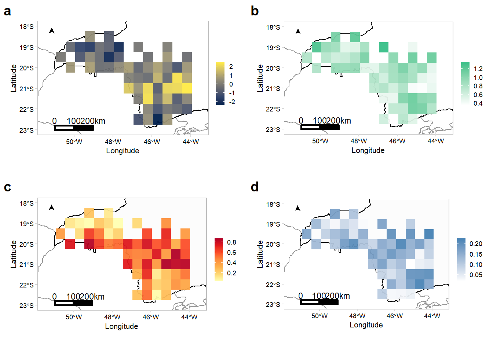
# ggsave("figs/combo_pca.png", dpi = 300, height = 6, width = 10)Prediction
data %>%
mutate(prev = positives/samples) %>%
mutate(prob = mod_pca$summary.fitted.values$mean) %>%
summarise(r = cor(prev, prob),
r2 = cor(prev, prob)^2,
ccc = DescTools::CCC(prev, prob)$rho[,1])| r | r2 | ccc |
|---|---|---|
| 0.8664144 | 0.750674 | 0.8160893 |
prediction_pca = data %>%
mutate(prev = positives/samples) %>%
mutate(prob = mod_pca$summary.fitted.values$mean,
min = mod_pca$summary.fitted.values$`0.025quant`,
max = mod_pca$summary.fitted.values$`0.975quant`) %>%
ggplot(aes(prev, prob))+
geom_point(color ="gray", size =2.5)+
geom_errorbar(aes(ymin= min, ymax = max), width = 0, color ="gray", alpha = 0.5)+
geom_smooth(method = "lm", color = "darkred", size =1.2) +
# theme_minimal_grid()+
coord_equal(xlim=c(0,1), ylim = c(0,1))+
theme(axis.line = element_line(color = "gray"),
panel.grid = element_blank(),
panel.background = element_blank())+
labs(subtitle = "Model with principal components",
y = "Predicted risk",
x = "Actual prevalence")
prediction_pca## `geom_smooth()` using formula 'y ~ x'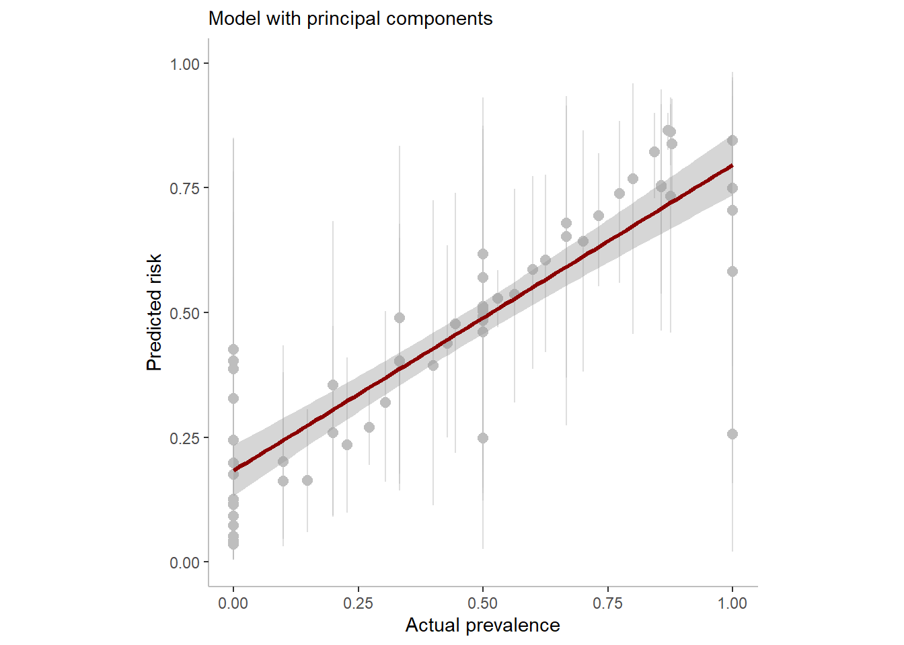
# ggsave("figs/pred_actual_pca.png", dpi = 300, height = 3, width = 3)# prediction_var + prediction_pca+
# plot_annotation(tag_levels = "a")
# ggsave("figs/pred_actual.png", dpi = 300, height = 3.5, width = 7)Correlate predictions
cor(mod_pca$summary.fitted.values$mean, mod$summary.fitted.values$mean)## [1] 0.9958989data.frame(pca_pred = mod_pca$summary.fitted.values$mean,
var_pred = mod$summary.fitted.values$mean) %>%
ggplot(aes(pca_pred,var_pred))+
geom_point(color ="gray", size=3)+
geom_abline(linetype = 2)+
geom_smooth(method = "lm", se = F, color = "red")+
coord_fixed()+
theme_minimal_grid()+
labs(x = "Predicted with principal components",
y = "Predicted with climate variables")+
theme(panel.border = element_rect(color = "gray"))## `geom_smooth()` using formula 'y ~ x'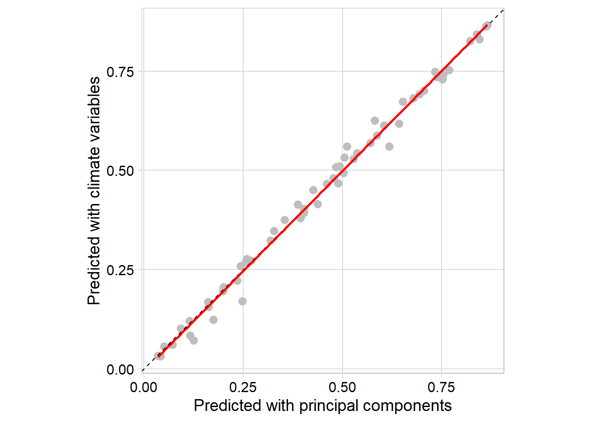
# ggsave("figs/correl_pred.png", dpi = 600, width = 3.94, height = 3.94)Supplemental graphs
summary of covariate
data %>%
dplyr::select(prec_rainy, temp_dry, wind_ann, orange, mandarin, area)%>%
pivot_longer(1:6,
names_to = "var",
values_to = "value") %>%
group_by(var) %>%
summarise(#mean(value),
min(value),
max(value)
)## `summarise()` ungrouping output (override with `.groups` argument)| var | min(value) | max(value) |
|---|---|---|
| area | -0.5108256 | 7.241538 |
| mandarin | 0.0000000 | 5.697094 |
| orange | 0.0000000 | 3.555348 |
| prec_rainy | 4.7537500 | 5.815000 |
| temp_dry | 15.2675000 | 22.392500 |
| wind_ann | 1.7200000 | 3.560000 |
data %>%
dplyr::select(prec_rainy, temp_dry, wind_ann, orange, mandarin, area)%>%
pivot_longer(1:6,
names_to = "var",
values_to = "value") %>%
ggplot(aes(value))+
geom_histogram(bins = 8,
color = "white",
fill = "steelblue")+
facet_wrap(~var, scales = "free")+
theme_minimal_hgrid()+
labs(x = "Value",
y = "Frequency")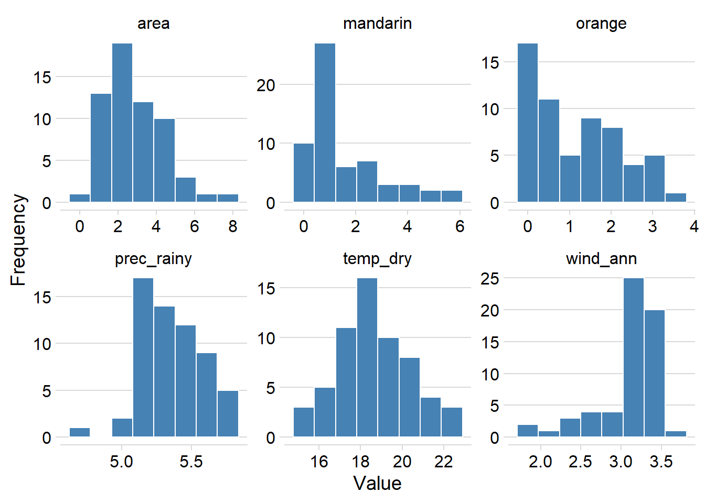
# ggsave("figs/hist_var.png", dpi =600, height = 5, width = 8)Clime_map = function(data, var){
z = as.numeric(data[[var]])
data2 = data.frame(data[,c("x","y")],z)
g =data2 %>%
# gather(c(4,5,7,8,10,11), key = "var", value = "value") %>%
ggplot()+
geom_sf( data = BRA, fill = "white", color = "gray60")+
geom_sf(data = MG, fill = "gray99", color = "black") +
geom_tile(aes(x,y, fill = z ),
# fill ="gray60",
size = .2,
color = "gray65")+
geom_point(data = hh_hlb,
aes(lon, lat, color = presenca),
size = 0.4)+
scale_color_manual(values =c("#3e9b39", 'red'))+
scale_fill_viridis_c(option = "B")+
coord_sf() +
guides(color = guide_legend(override.aes = list(size=2.5)))+
theme_minimal_grid(font_size = 8)+
labs(x = "Longitude",
y = "Latitude",
color = "", fill = "")+
north( location = "topleft", scale = 0.08, symbol = 10,
x.min=-51.5, x.max=-43.5, y.min=-23, y.max=-18)+
scalebar(location = "bottomleft", dist = 50,
dist_unit = "km", transform = TRUE,
x.min=-51, x.max=-44, y.min=-23, y.max=-18,
st.bottom = FALSE,
st.dist = 0.03, st.size = 2)+
ylim(-23, -18)+
xlim(-51.5, -43.5)+
facet_wrap(~presenca)+
theme(panel.border = element_rect(color = "gray"))
return(g)
}Climate
plot_grid(
Clime_map(data=data, var="prec_rainy"),
Clime_map(data=data, var="temp_dry"),
Clime_map(data=data, var="wind_ann"),
ncol = 1,
labels = c("P_rainy", "T_dry","W_ann")
)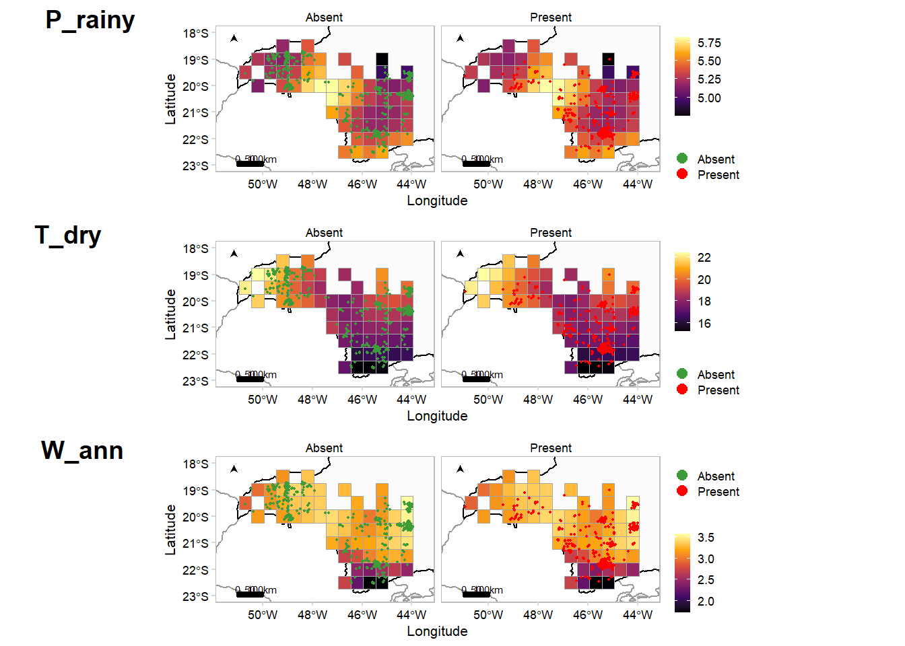
# ggsave("figs/clim_var_mapas.png", dpi=300, height = 10,width = 8)Orchard
plot_grid(
Clime_map(data=data, var="orange"),
Clime_map(data=data, var="mandarin"),
Clime_map(data=data, var="area"),
ncol = 1,
labels = c("Orange","Mandarin","Area")
)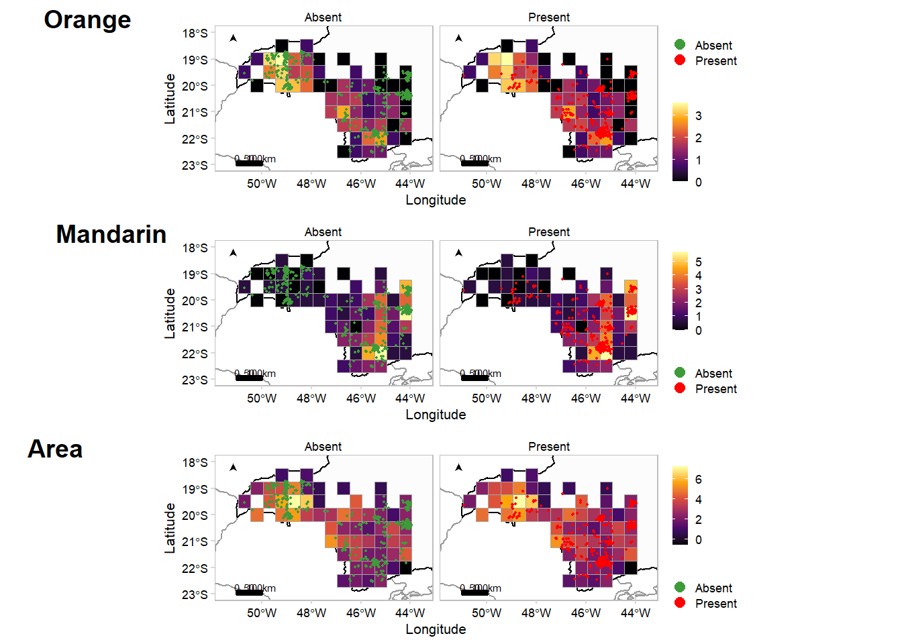
# ggsave("figs/orchard_var_mapas.png", dpi=300, height = 10,width = 8)data %>%
dplyr::select(prec_rainy,temp_dry,wind_ann,orange,mandarin,area) %>%
gather() %>%
group_by(key) %>%
summarise(mean(value),
min(value),
max(value))## `summarise()` ungrouping output (override with `.groups` argument)| key | mean(value) | min(value) | max(value) |
|---|---|---|---|
| area | 2.875484 | -0.5108256 | 7.241538 |
| mandarin | 1.496651 | 0.0000000 | 5.697094 |
| orange | 1.177228 | 0.0000000 | 3.555348 |
| prec_rainy | 5.362667 | 4.7537500 | 5.815000 |
| temp_dry | 18.678750 | 15.2675000 | 22.392500 |
| wind_ann | 3.088167 | 1.7200000 | 3.560000 |
data %>%
dplyr::select(prec_rainy,temp_dry,wind_ann,orange,mandarin,area) %>%
gather() %>%
ggplot(aes(value))+
geom_histogram(aes(y = ..density..),
bins = 10,
color = "black",
fill = "gray75")+
geom_density(color = "darkred",
size =1,
fill = NA)+
facet_wrap(~key, scales = "free")+
theme_minimal_hgrid()+
theme(panel.border = element_rect(color = "gray"))+
labs(x = "Variable value",
y = "Density")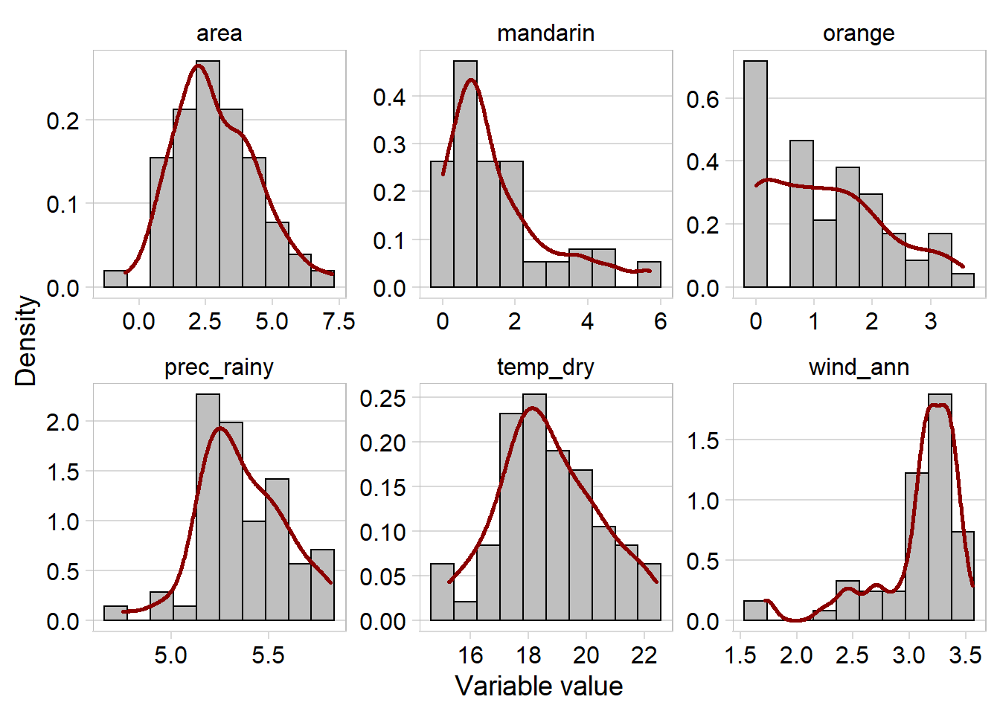
principal components
plot_grid(
Clime_map(data=data_pca, var="PC1"),
Clime_map(data=data_pca, var="PC2"),
Clime_map(data=data_pca, var="PC3"),
ncol = 1,
labels = c("PC1","PC2","PC3")
)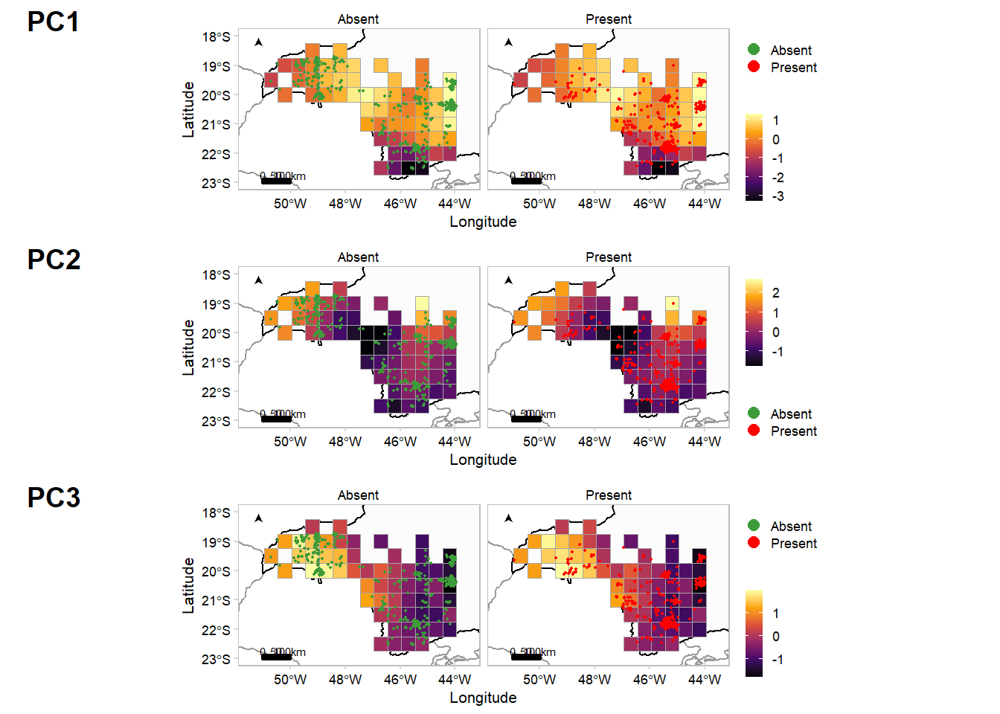
# ggsave("figs/pca_mapas.png", dpi=300, height = 10,width = 8)Alternative plots
Clime_map2 = function(data, var, titl){
z = as.numeric(data[[var]])
data2 = data.frame(data[,c("x","y")],z)
g =data2 %>%
# gather(c(4,5,7,8,10,11), key = "var", value = "value") %>%
ggplot()+
geom_sf( data = BRA, fill = "white", color = "gray60")+
geom_sf(data = MG, fill = "gray99", color = "black") +
geom_tile(aes(x,y, fill = z ),
# fill ="gray60",
size = .2,
color = "gray65")+
geom_point(data = hh_hlb,
aes(lon, lat, color = presenca),
size = 0.1)+
scale_color_manual(values =c("black", 'orange'))+
# scale_fill_viridis_c(option = "B")+
scale_fill_distiller(direction = 1)+
coord_sf() +
guides(color = guide_legend(override.aes = list(size=2.5)))+
theme_minimal_grid(font_size = 8)+
labs(x = "Longitude",
y = "Latitude",
color = "",
fill = "",
title = titl)+
north( location = "topleft", scale = 0.08, symbol = 10,
x.min=-51.5, x.max=-43.5, y.min=-23, y.max=-18)+
scalebar(location = "bottomleft", dist = 100,
dist_unit = "km", transform = TRUE,
x.min=-51, x.max=-44, y.min=-23, y.max=-18,
st.bottom = FALSE, height = 0.05,
st.dist = 0.05, st.size = 1.5)+
ylim(-23, -18)+
xlim(-51.5, -43.5)+
# facet_wrap(~presenca)+
theme(panel.border = element_rect(color = "gray"))
return(g)
}correlation and distribution
Candidate vars
Clime_map2(data=data, var="prec_rainy", titl = "Preciptation in the rainy season")+
Clime_map2(data=data, var="temp_dry", titl = "Temperature in the dry season")+
Clime_map2(data=data, var="wind_ann", titl = "Wind speed")+
Clime_map2(data=data, var="orange", titl = "Orange")+
Clime_map2(data=data, var="mandarin", titl = "Mandarin")+
Clime_map2(data=data, var="area", titl = "Area")+
Clime_map2(data=data_pca, var="PC1", titl = "PC1")+
Clime_map2(data=data_pca, var="PC2", titl = "PC2")+
Clime_map2(data=data_pca, var="PC3", titl = "PC3")+
plot_layout(ncol = 3)+
plot_annotation(tag_levels = "A")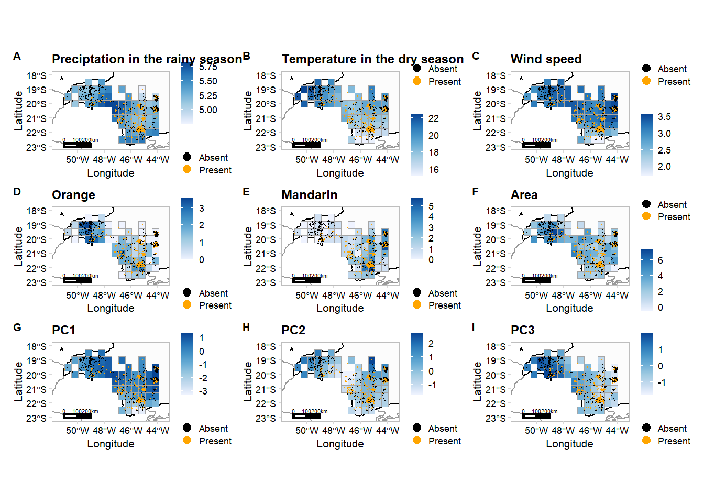
ggsave("figs/candidate_var_map.png", dpi=600, height = 6.5,width =10)new results graphs
g_spt_v2 = g_spt_v+labs(title = "Spatial effect")
g1_v2 = g1_v+labs(title = "HLB risk")
prediction_var2 = prediction_var+labs(subtitle = "")layout <- "
ACE
BDE
"
g_spt_v2+g_spt_v_sd+g1_v2+g1_v_sd+prediction_var2 +
plot_layout(design = layout)+
plot_annotation(tag_levels = "A")## `geom_smooth()` using formula 'y ~ x'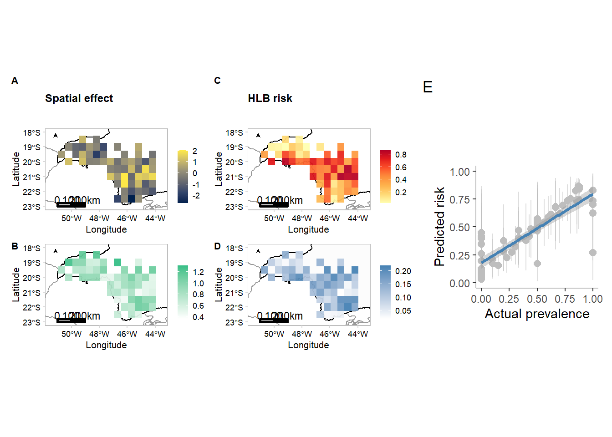
ggsave("figs/result_var.png", dpi=300, height = 5.5,width =12)## `geom_smooth()` using formula 'y ~ x'g_spt_pc2 = g_spt_pc+labs(title = "Spatial effect")
g1_pc2 = g1_pc+labs(title = "HLB risk")
prediction_pca2 = prediction_pca+labs(subtitle = "")layout <- "
ACE
BDE
"
g_spt_pc2+g_spt_pc_sd+g1_pc2+g1_pc_sd+prediction_pca2 +
plot_layout(design = layout)+
plot_annotation(tag_levels = "A")## `geom_smooth()` using formula 'y ~ x'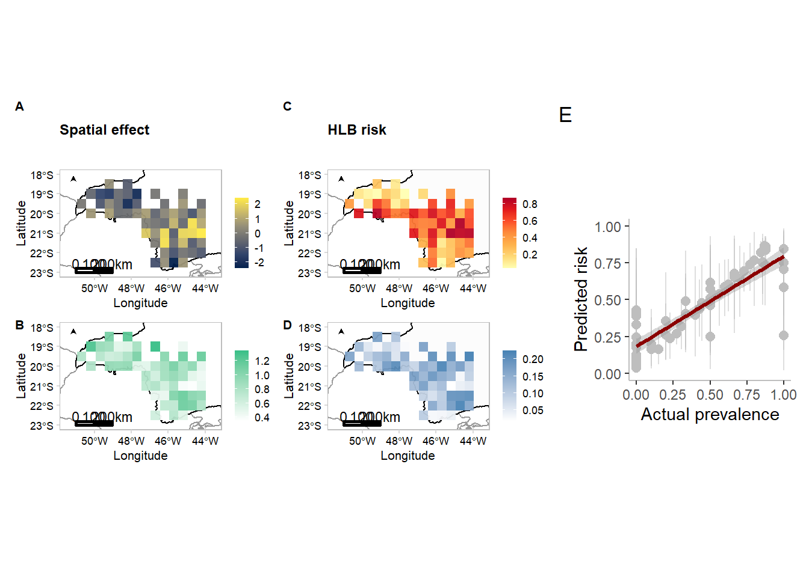
ggsave("figs/result_pca.png", dpi=300, height = 5.5,width =12)## `geom_smooth()` using formula 'y ~ x'